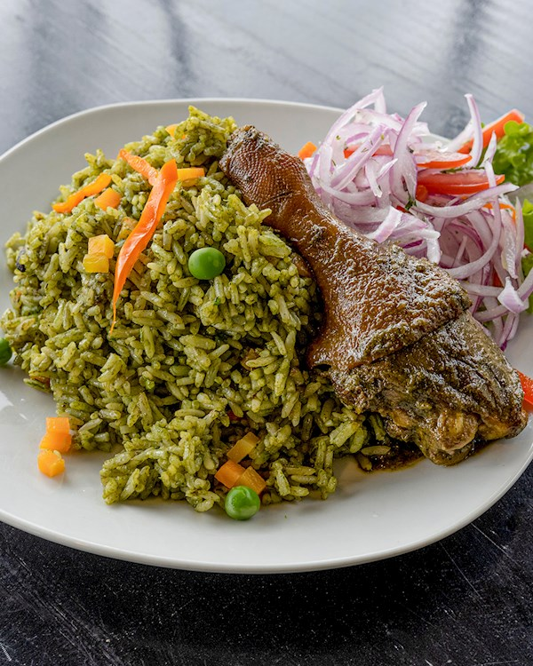

Arroz con Pato

Description: Arroz con Pato is a traditional Peruvian duck and rice dish
from the northern region of Chiclayo. It features crispy, tender duck
cooked in a vibrant, fragrant cilantro rice infused with dark beer and
Peruvian chili peppers.
Ingredients:
- Duck: 4 duck legs or thighs (skin-on).
- Cilantro paste: 1 cup freshly blended dark cilantro leaves.
- Ají amarillo paste: 2 tablespoons of bright yellow chili paste.
- Ají panca paste: 1 tablespoon of mild, smoky red chili paste.
- Beer: 1 cup of dark beer (or dark ale) for depth of flavor.
- Rice: 2 cups long-grain white rice or arborio rice.
-
Aromatics: 1 finely chopped red onion and 4 crushed garlic cloves.
-
Vegetables: 1/2 cup peas, 1/2 cup diced carrots, and 1 diced red bell
pepper.
- Broth: 2 to 3 cups duck or chicken stock.
-
Spices and seasoning: Ground cumin, salt, black pepper, and vegetable
oil.
-
Optional additions: Red wine, chicha de jora, or salsa criolla
(marinated red onion salad) for serving.
Steps:
-
Sear the duck: Season the duck pieces generously with salt, pepper, and
cumin. Heat a large pot over medium-high heat with a splash of oil. Sear
the duck skin-side down until golden brown and crisp (about 6 to 8
minutes per side). Remove duck and set aside, reserving 2 tablespoons of
duck fat in the pot.
-
Make the sofrito: In the same pot, add the onions and garlic to the duck
fat. Sauté over medium heat until softened. Stir in the ají amarillo and
ají panca pastes and cook for 3 to 4 minutes until fragrant.
-
Add cilantro and liquids: Pour in the blended cilantro paste, dark beer,
and 2 cups of duck/chicken broth. Bring to a boil.
-
Simmer the duck: Return the duck legs to the pot. Cover, lower the heat,
and simmer gently for 35 to 45 minutes until the duck is tender. Remove
the duck pieces and set aside.
-
Cook the rice: Stir the white rice, peas, carrots, and red bell peppers
directly into the simmering cilantro broth. Adjust liquids so there is
enough broth to cook the rice. Cover tightly and cook on low heat for 18
to 20 minutes until the rice is cooked through and fluffy.
-
Serve: Fluff the rice with a fork, place the seared duck legs on top of
the rice, and serve hot alongside salsa criolla.
Home